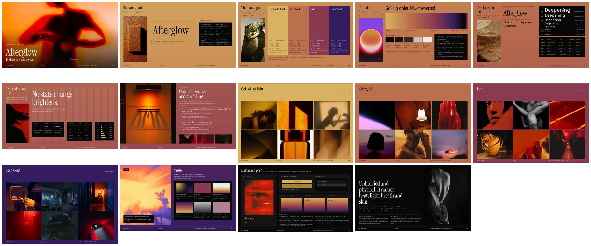
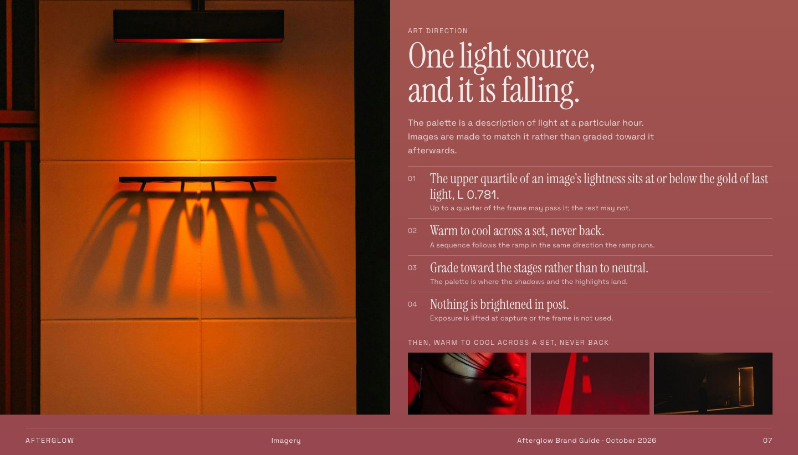
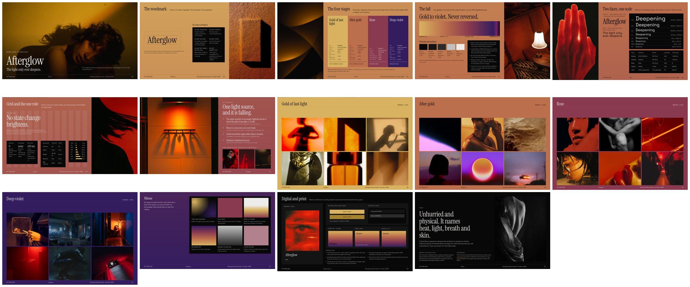
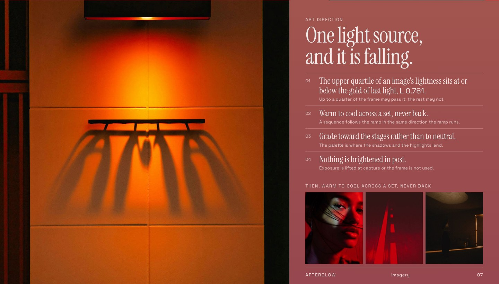
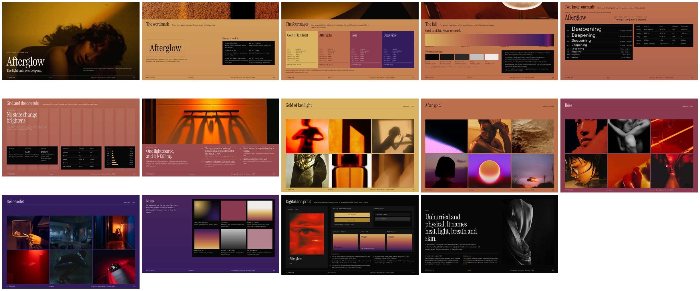
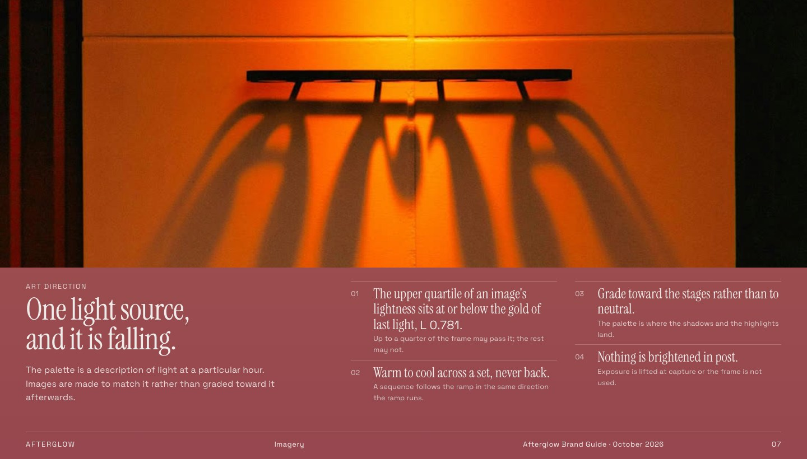
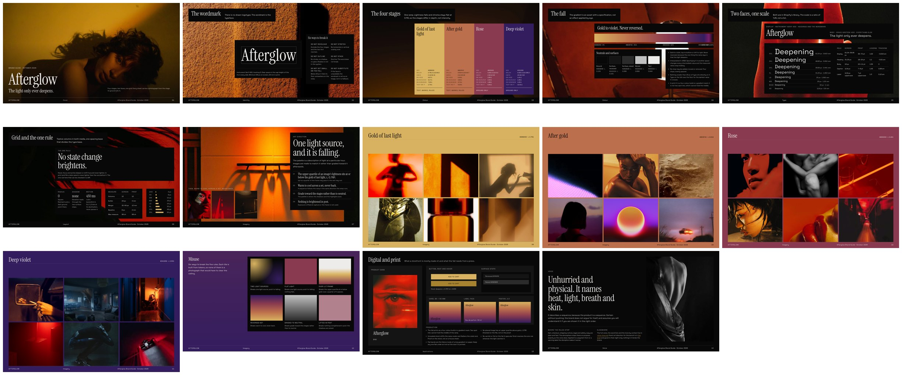
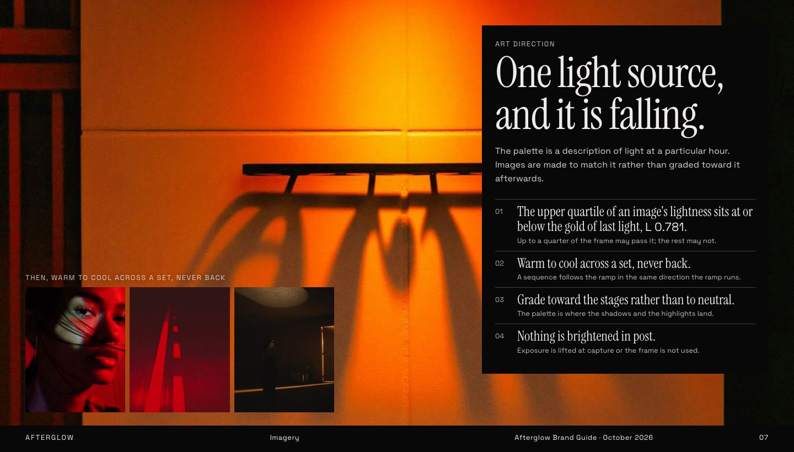

Afterglow brand guide · direction B family · 10 October 2026
Four ways of placing the photograph on a spec sheet. Content, order and pages are the same in all four. Only how the image sits on the sheet changes.
The photograph is a tall column beside the title, and the readings take the rest of the sheet.
The calmest of the four. The image and the readings never touch, so neither competes. Art direction runs the lamp half-bleed off the top-left corner.


The photograph bleeds off the sheet edge at full height, and the side alternates from sheet to sheet.
Turning pages has a rhythm, like a magazine spread. The image is larger than in B1 and runs to the paper's edge. Art direction gives the lamp 58% of the sheet.


The photograph is a letterbox across the top of every sheet, like a film still, with the readings below.
The most cinematic of the four. On art direction the lamp fills two-thirds of the sheet. The cost: portrait frames lose most of themselves to a wide crop, and the band narrows on the type and grid sheets to make room.


The photograph is the ground of every sheet, and the readings sit over it in void panels.
This answers the "black boxes" problem: the panels become the legible surface over an image instead of boxes on coloured paper. The cost is that the readings cover a lot of each photograph.

